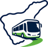

Tenerife guaguaTITSA — Transportes Interurbanos de Tenerife
Paradas, líneas y horarios: datos oficiales GTFS publicados por TITSA (titsa.com), vía datos.gob.es. Fecha de servicio activa: .
© OpenStreetMap contributors
Mapas, geocodificación de direcciones (Nominatim) y cálculo de rutas a pie (OSRM/FOSSGIS), con licencia ODbL.
Leaflet
Biblioteca de mapas de código abierto (BSD-2-Clause).